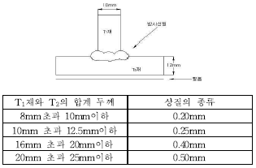
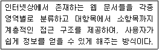
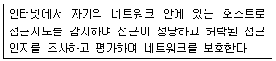

방사선비파괴검사기능사 (2008-02-03 기출문제)
1과목: 방사선투과시험법
1. 방사선 관리구역을 설정하기 위한 측정 장비로 가장 적합한 것은?
- 필름 배지
- 알람모니터
- 서베이미터
- 포켓도시미터
(정답률: 62%)

2. 다음 중 X선과 γ선에 대한 설명으로 틀린 것은?
- X선과 γ선은 전자파의 일종이다.
- 인간의 오감으로 느낄 수 없다.
- X선과 γ선은 물질을 투과하는 성질을 가지고 있다.
- X선과 γ의 강도는 관에 적용되는 회전력에 의해 결정된다.
(정답률: 28%)
3. 비파괴검사법 중 대상 물체가 전도체인 경우에만 검사가 가능한 시험 방법은?
- 와전류탐상시험
- 방사선투과시험
- 초음파탐상시험
- 침투탐상시험
(정답률: 알수없음)
4. 공업용 X선 필름의 성능 특성에 관한 설명으로 잘못된 것은?
- 저속도 필름은 관용도가 낮다
- 저속도 필름으로 높은 콘트라스트를 얻을 수 있다.
- 고속도 필름은 입상성이 높아 정밀시험에 적합하다.
- 형광증감지용 필름은 미세한 결함의 검출에 적합하지 않다.
(정답률: 알수없음)
5. 다음 중 두께 10cm 정도의 강용접부를 방사선투과검사 할때 가장 적합한 방사선원은 어느 것인가?
- Ir-192
- Cs-137
- Co-60
- Tm-170
(정답률: 알수없음)
6. 방사선투과시험의 필름노출조건에서 10cm 거리에서 10mA, 5분의 노출을 주었다. 20cm 거리, 10분의 노출을 주기위해서는 몇 mA가 되어야 같은 조건을 유지할 수 있는가?
- 5mA
- 10mA
- 20mA
- 80mA
(정답률: 37%)
7. 다음 중 사진농도 2.0을 올바르게 설명한 것은?
- 투과광이 입사광의 1/100로 감소된 것이다.
- 투과광이 입사광의 1/20로 감소된 것이다.
- 투과광이 입사광의 1/10로 감소된 것이다.
- 투과광이 입사광의 1/2로 감소된 것이다.
(정답률: 알수없음)
8. X선관의 음극 필라멘트로 주로 많이 사용되는 물질은?
- 텅스텐
- 철
- 구리
- 알루미늄
(정답률: 알수없음)
9. 다음 중 방사선투과시험시 노출량을 좌우하는 것이 아닌 것은?
- 시험체의 종류
- 필름의 종류
- 증감지의 종류
- 투과도계의 종류
(정답률: 40%)
10. 다음 중 초음파탐상검사의 진동자 재질로 사용되지 않는 것은?
- 황산리튬
- 수정
- 할로겐화은
- 티탄산바륨
(정답률: 알수없음)
11. 다음 중 자분탐상시험으로 발견될 수 있는 대상으로 가장 적합한 것은?
- 비자성체의 내부 다공성 결함
- 배관 용접부내의 슬래그 개재물
- 강자성체에 있는 피로균열
- 철편에 있는 탄소 함유량
(정답률: 50%)
12. 촬영한 필름을 현상할 때 현상탱크 내에서 필름을 위, 아래로 흔들어 교반해 주는 가장 주된 목적은?
- 감광 유제에 생기는 주름을 없애기 위하여
- 필름이 균일하게 현상되도록 하기 위하여
- 노출되지 않은 은(Ag)미립자를 분산시키기 위하여
- 과도한 압력으로부터 필름을 보호하기 위하여
(정답률: 60%)
13. SFD(선원-필름간 거리) 80cm로 촬영하는데 10분 노출하여 적정한 투과사진을 얻었다. 다른 촬영조건은 동일하고 단지 SFD 40cm로 촬영한다면 적정한 노출 시간은 얼마인가?
- 2.5분
- 5분
- 20분
- 40분
(정답률: 알수없음)
14. 다음 중 45° 경사각탐촉자로 시험체의 결함을 검출할 때 가장 적절한 경우는?
- 음파의 진행 방향에 수직이며, 탐상 표면과 평행한 결함인 경우
- 음파의 진행 방향과 같으며, 탐상 표면과 45°를 이루는 결함인 경우
- 음파의 진행 방향에 수직이며, 탐상 표면과 45°를 이루는 결함인 경우
- 음파의 진행 방향과 같으며, 탐상 표면에 수직인 결함인 경우
(정답률: 알수없음)
15. 다음 중 단위의 환산이 옳은 것은?
- 1Gy = 100rad
- 1Sv = 103rem
- 1rad = 103erg/g
- 1R = 2.58×10-1C/kg alr
(정답률: 알수없음)
16. 방사선투과검사용 필름 카세트의 종류에 대한 설명으로 옳은 것은?
- 금속카세트의 전면은 X선 흡수가 큰 재료를 쓴다.
- 유연한 카세트는 필름에 압력 마크를 발생시키기 쉽다.
- 진공카세트는 필름과 증감지의 접착성을 떨어뜨리는 단점이 있다.
- 금속카세트는 시험체가 곡면일 때 사용이 용이하다.
(정답률: 알수없음)
17. 다음 중 물질에 대한 투과력이 가장 큰 것은?
- α입자
- β입자
- γ선
- 가시광선
(정답률: 알수없음)
18. 방사선투과사진 촬영시 X선발생장치를 사용할 때 노출조건을 정하기 위해 노출도표를 많이 이용한다. 다음 중 노출도표와 가장 관계가 먼 인자는?
- 관전류
- 관전압
- 선원의 크기
- 시험체의 두께
(정답률: 알수없음)
19. 방사선투과사진 촬영시 필름의 양면에 밀착시켜 방사선 에너지를 유효하게 하는 것은 무엇인가?
- 계조계
- 밀도계
- 증감지
- 투과도계
(정답률: 알수없음)
20. 다른 조건은 같고 비방사능만 커졌을 경우 방사선 투과사진의 선명도에 대한 설명으로 가장 적합한 것은?
- 선명도가 좋아진다.
- 선명도가 나빠진다.
- 선명도에는 변화가 없다.
- 상이 모두 백색계열의 상태로 나타난다.
(정답률: 알수없음)
2과목: 방사선안전관리 관련규격
21. 2개의 투과도계를 양쪽에 놓고 촬영한 결과 어느 한쪽의 투과도계가 규격값을 만조하지 못했을 때 그 사진의 판정으로 가장 옳은 것은?
- 규격값을 만족한 쪽으로 판정한다.
- 사진의 농도가 진한 것으로 판정한다.
- 불합격으로 판정한다.
- 결함의 정도가 많은 것으로 판정한다.
(정답률: 알수없음)
22. 다음 중 방사선투과시험시 노출도표에 명시하지 않아도 되는 것은?
- 장비의 제조년월일
- 증감지의 종류와 두께
- 사진농도와 현상조건
- 선원과 필름사이의 거리
(정답률: 80%)
23. 다음 중 방사선투과시험시 계조계를 사용하는 이유는?
- 투과사진의 콘트라스트를 판단하기 위해
- 필름의 입상성을 판단하기 위해
- 촬영 위치를 정확히 판단하기 위해
- 투과사진의 식별도를 낮추기 위해
(정답률: 46%)
24. 방사선발생장치의 X선관에서 전자는 표적에 부딪쳐 운동에너지를 잃고 대부분 무엇으로 변하는 가?
- 열에너지
- 감마선
- 특성 X선
- 백색 X선
(정답률: 알수없음)
25. 자분탐상시험 중 탈자를 해야 하는 경우가 아닌 것은?
- 잔류자계가 측정계기에 영향을 미칠 가능성이 있을 경우
- 자분탐상시험 후 전기 아크용접을 실시해야 할 경우
- 자분탐상시험 후 페인트 해야 할 경우
- 자분탐상시험 후 열처리를 해야 할 경우
(정답률: 알수없음)
26. [그림]과 같은 강용접부의 결함 여부를 검출하기 위해 강용접 이음부의 방사선투과 시험방법(KS B 0845)을 적용할 때 촬영 두께에 따른 투과도계의 식별 최소 선지름이 [표]와 같다면 이 촬영에서의 식별 최소 선지름은 얼마인가? (단, 다음 표에서의 상질의 종류는 F급이다.)

- 0.20mm
- 0.25mm
- 0.40mm
- 0.50mm
(정답률: 28%)
27. 원자력법에서 허용하는 방사선작업종사자의 손·발 및 피부에 대한 등가선량 한도로 옳은 것은?
- 년간 15밀리시버트
- 년간 50밀리시버트
- 년간 150밀리시버트
- 년간 500밀리시버트
(정답률: 30%)
28. 티탄 용접부의 방사선 투과시험방법(KS D 0239)에 따른 촬영배치를 설명한 것이다. 다음 중 틀린 것은?
- 투과도계는 시험부 유효거리 내에서 가장 가는 선이 바깥쪽이 되도록 놓는다.
- 관 길이용접부의 이중벽 한면 촬영방법의 경우 투과도계를 시험부의 필름쪽 면 위에 놓는다.
- 선원과 투과도계 사이의 거리(L1)는 시험부의 유효길이(L3)의 3배 이상으로 하여야 한다.
- 촬영시 조사범위를 필요 이상으로 크게 하지 않기 위해 조리개를 사용한다.
(정답률: 알수없음)
29. 강용접 이음부의 방사선투과 시험방법(KS D 0845)에 의한 강관 원둘레 용접 이음부의 2중벽 단일면 촬영에서 시험부에서의 가로 갈라짐의 검출을 필요로 하는 경우, 1회의 촬영으로 만족하는 시험부의 유효길이는 관의 원둘레 길이의 얼마 이하이어야 하는가?
- 1/2
- 1/3
- 1/4
- 1/6
(정답률: 알수없음)
30. 알루미늄 평판 접합 용접부의 방사선투과 시험방법(KS D 0242)에 의해 투과시험할 때 촬영배치의 설명으로 옳은 것은?
- 1개의 투과도계를 촬영할 필름 밑에 놓는다.
- 계조계는 시험부 유효 길이의 바깥에 놓는다.
- 2개의 투과도계를 시험부 방사면 위 용접부 양쪽에 각각 놓는다.
- 계조계는 시험부와 필름사이에 각각 2개를 놓는다.
(정답률: 알수없음)
31. 강용접 이음부의 방사선투과 시험방법(KS D 0845)에 의한 투과사진에서의 결함 분류방법을 설명한 것 중 틀린 것은?
- 시험 시야는 시험부의 유효 길이 중 결함점수가 가장 커지는 부위에 적용한다.
- 둥근 블로홀은 종별에 따라 분류할 때 제1종 결함으로 분류한다.
- 갈라짐은 항상 제4종 결함으로서 3류로 분류한다.
- 텅스텐 혼입인 경우에는 결함점수를 구한다.
(정답률: 37%)
32. 강용접 이음부의 방사선투과 시험방법(KS D 0845)에 의한 계조계의 종류에 해당되지 않는 것은?
- 15형
- 20형
- 25형
- 30형
(정답률: 알수없음)
33. 다음 중 방사선의 “선량한도”의 정의로 옳은 것은?
- 내부에 피폭되는 방사선량 값
- 외부에 피폭되는 방사선량 값
- 외부에 피폭되는 방사선량과 내부에 피폭되는 방사선량을 합한 피폭 방사선량의 상한 값
- 외부에 피폭되는 방사선량과 내부에 피폭되는 방사선량을 합한 피폭 방사선량의 하한 값
(정답률: 알수없음)
34. 다음 중 γ선 조사기에 사용되는 차폐용기로 가장 효율적인 것은?
- 철
- 고갈우라늄
- 콘크리트
- 고령토
(정답률: 알수없음)
35. 알루미늄 주물의 방사선투과 시험방법 및 투과사진의 등급분류 방법(KS D 0241)에서 투과사진의 상질을 평가하기 위한 투과도계의 사용에 대한 옳은 설명은?
- 투과도계는 방사선 촬영 중에 제품의 지정 살두께 밑에 설치한다.
- 투과도계는 가능한 한 방사선축에 수직이 되도록 놓는다.
- 제품모양이 복잡한 경우에는 필름에서 가장 가까운 검사부의 위치에 놓는다.
- 이중벽 촬영의 경우는 하부 벽의 필름 쪽에 가까이 놓는다.
(정답률: 알수없음)
36. LiF, CaSO4 및 CaF2의 소자를 이용한 열형광선량계(TLD)로 측정할 수 있는 방사선은?
- X선, γ선
- α선, β선
- β선
- α선
(정답률: 알수없음)
37. 강용접부 이음부의 방사선투과 시험방법(KS B 0845)에 의한 강판 맞대기 용접이음부를 검사하는 경우 투과 사진의 필요 조건이 아닌 것은?
- 계조계의 값
- 시험부의 유효 길이
- 투과도계의 식별 최소 선지름
- 시험부의 투과 두께가 최대가 되는 선원의 조사 방향
(정답률: 30%)
38. 강용접 이음부의 방사선투과 시험방법(KS B 0845)에 따라 강용접부의 투과시험에서 최고 농도 3.2의 투과사진을 관찰하고자 할 때 어떤 관찰기가 가장 적당하겠는가?
- D10형
- D20형
- D30형
- D40형
(정답률: 알수없음)
39. 방사선작업종사자 이외의 자인 수시출입자가 방사선관리구역에 수시로 출입함으로서 이 장소에서의 방사선 작업에 의해 월 2mSv의 방사선에 전신 균일 피폭된다면 이 출입자는 그 장소에 몇 개월 이상 근무해서는 안되는가? (단, 이 수시출입자에 대한 전신 균일조사시 년간 선량한도는 12mSv라고 한다.)
- 3개월
- 6개월
- 9개월
- 12개월
(정답률: 알수없음)
40. 다음 중 Ir-192의 방사선이 인체에 피폭되었을 때 나타날 수 있는 상호 작용만으로 조합된 것은?
- 광전 효과, 콤프턴 효과
- 전자쌍 생성, 모서리 효과
- 콤프톤 효과, 힐 효과
- 모아레 효과, 광핵반응
(정답률: 알수없음)
3과목: 금속재료일반 및 용접 일반
41. 하나의 사무실, 건물, 대학, 연구소 내의 근거리에 있는 컴퓨터들과 주변장치들을 연결하여 데이터를 주고 받을 수 있도록 구성된 근거리 통신망은?
- MAN
- WAN
- LAN
- SAN
(정답률: 알수없음)
42. 다음이 설명하고 있는 웹페이지 검색 방식은?

- 웹 인덱스 방식
- 키워드 검색방식
- 웹 디렉토리 방식
- 메타형 검색방식
(정답률: 알수없음)
43. 다음이 설명하고 있는 것은?

- 해킹
- 방화벽
- 크래킹
- 잠금장치
(정답률: 알수없음)
44. 사용자가 웹 서버의 하이퍼텍스트 문서를 볼 수 있게 해주는 클라이언트 프로그램을 무엇이라 하는가?
- 웹 브라우저
- 운영체제
- 워드프로세서
- 오라클
(정답률: 알수없음)
45. 컴퓨터시스템에서 예기치 못한 일이 발생하였을 때, 현재하던 일을 멈추고, 다른 작업을 처리하도록 하는 것을 무엇이라 하는가?
- 스풀링(spooling)
- 인터럽트(interrupt)
- 스케줄링(scheduling)
- 페이징(paging)
(정답률: 알수없음)
46. 금속을 냉간가공하면 결정입자가 미세화되어 재료가 단단해지는 현상은?
- 가공경화
- 열간연화
- 청열메짐
- 조직의 열화
(정답률: 알수없음)
47. 강에 대한 망간(Mn)의 영향이 아닌 것은?
- 담금질이 잘 된다.
- 점성증가, 고온가공이 용이하다.
- 적열메짐의 원인이 되는 원소이다.
- hs에서 결정성장을 감소시킨다.
(정답률: 알수없음)
48. 다음 중 주철이 성장하는 원인에 속하지 않는 것은?
- 시멘타이트의 흑연화에 의해
- 펄라이트 조직 중의 Si의 환원에 의해
- 흡수된 가스의 팽창에 따른 부피 증가 등에 의해
- A1변태점 이상의 온도에서 장시간 방치되어 부피증가에 의해
(정답률: 알수없음)
49. 다음 중 재료의 연성을 알기 위한 시험법은?
- 란쯔 시험
- 조미니 시험
- 마크로 시험
- 에릭슨 시험
(정답률: 40%)
50. 다음 중 금속의 응고에 대한 설명으로 틀린 것은?
- 냉각 곡선은 시간에 대한 온도변화를 나타낸 곡선이다.
- 액체 금속이 응고시 응고점보다 낮은 온도에서 응고하는 것을 과냉이라 한다.
- 결정 입자의 크기는 핵 생성 속도가 핵 성장 속도보다 빠르면 입자는 조대화 된다.
- 용융 금속이 응고시 작은 결정을 만드는 핵을 중심으로 나뭇가지 모양으로 발달한 것을 수지상 결정이라 한다.
(정답률: 알수없음)
51. 수은을 제외한 금속재료의 일반적 성질을 설명한 것 중 옳은 것은?
- 금속은 상온에서 결정체이다.
- 순수한 금속일수록 열전도율은 떨어진다.
- 합금의 전기 전도율은 순수한 금속보다 좋다.
- 이온화 경향이 작은 금속일수록 부식되기 쉽다.
(정답률: 알수없음)
52. 다음 중 크리프(creep)에 대한 설명으로 옳은 것은?
- 제1기 크리프를 가속 크리프라 한다.
- 제2기 크리프를 감속 크리프라 한다.
- 제3기 크리프를 정상 크리프라 한다.
- 재료에 일정한 응력을 가하고, 어떤 온도에서 변형량의 시간적 변화를 크리프라 한다.
(정답률: 알수없음)
53. 다음 중 Ni을 함유한 합금이 아닌 것은?
- 인바(Invar)
- 엘린바(Elinvar)
- 플레티나이트(Platinite)
- 문쯔 메탈(Muntz metal)
(정답률: 알수없음)
54. 주물용 Al-Si 합금 용탕에 0.01%정도의 금속나트륨을 넣고 주형에 용탕을 주입함으로써 조직을 미세화시키고 공정점을 이동시키는 처리는?
- 용체화처리
- 개량처리
- 접종처리
- 구상화처리
(정답률: 알수없음)
55. 금속간 화합물인 탄화철(Fe3C)중의 Fe의 원자비(%)는?
- 25
- 45
- 65
- 75
(정답률: 알수없음)
56. 축각이 α=β=γ=90°, 축의 길이는 α=b≠c로 이루어진 격자는?
- 단사정계
- 사방정계
- 입방격자
- 구상화처리
(정답률: 8%)
57. 다음 중 강도와 경도가 가장 큰 조직은?
- 마텐자이트
- 오스테나이트
- 페라이트
- 펄라이트
(정답률: 알수없음)
58. 용접기의 종류(용량)표시에 사용된 기호가 AW250이란 표시가 있을 때 여기에서 250은 무엇을 뜻하는가?
- 정격 2차 전류
- 정격 사용률
- 2차 최대 전류
- 2차 무부하 전압
(정답률: 알수없음)
59. 다음 용접의 종류 중 압적에 속하는 것은?
- 티그(TIG) 용접
- 서브머지드 용접
- 점 용접
- 일렉트로 슬래그 용접
(정답률: 알수없음)
60. 가스용접에서 용해아세틸렌 취급시 주의사항으로 틀린 것은?
- 저장실의 전기 스위치, 전등 등은 방폭 구조여야 한다.
- 저장 장소에는 화기를 가까이 하지 말아야 한다.
- 저장 장소는 밀폐된 곳이어야 한다.
- 용기는 진동이나 충격을 가하지 말고 신중히 취급해야 한다.
(정답률: 알수없음)